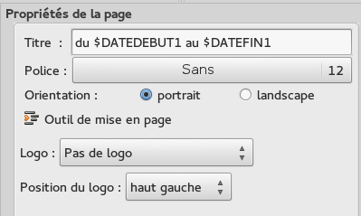

Configurer une page

Titre :
Titre qui apparaît en haut de la page.
Noter la possibilité d'utiliser des macros dans le titre de la page (voir info-bulle).
Police : Police du titre : une interface permet de configurer la police (fonte, taille).
Orientation : Orientation de la page portrait ou paysage.
Outil de mise en page : Permet de positionner et de dimensionner les différents graphiques dans la page via une interface graphique (cf § Mise en page)
Logo : Choix parmi une liste de différents logos (voir $AIDA_HOME/share/common/logos)
Position du logo : Permet de positionner le logo dans un des coins de la page.